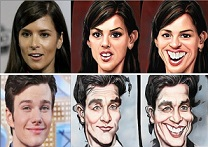
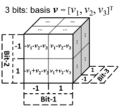
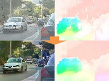
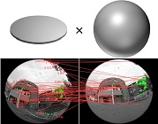

Ph.D. (Computer Science and Engineering)
Senior Researcher
Visual Computing Group
Microsoft Research Asia (MSRA)
Microsoft Homepage
Jiaolong (蛟龙): the given name from my parents. "Jiaolong" is an aquatic dragon in Chinese ancient legends with great power. It can be pronounced as "chiao-lung".
Yang (杨): the family name from my forefathers, the sixth most common surname in China. It can be pronounced as the word "young" with a rising tone.
[03/29/2022] Our GRAM - 3D-Aware GAN paper is accepted by CVPR'22 as Oral presentation.
[03/16/2022] Our VirtualCube - 3D Video Conferecing paper received IEEE VR'22 Best Paper Award!
[07/23/2021] 2 papers accepted by ICCV'21: high-res face texture completion and high-res optical flow estimation (Oral).
[07/20/2021] A PyTorch version of our Deep3DFace method is released: more accurate and easier to use!
Before joining MSRA in Sep 2016, I received dual PhD degrees from The Australian National University (ANU) and Beijing Institute of Technology (BIT) in 2016. I was a research intern at MSRA from Nov 2015 to Mar 2016, and was an visiting graduate researcher at Harvard University between Jul 2016 and Aug 2016. I received the Excellent PhD Thesis Award from China Society of Image and Graphics (CSIG) in 2017 (4 recipients in China).
|
Jianfeng Xiang+, Jiaolong Yang, Yu Deng, Xin Tong GRAM-HD: 3D-Consistent Image Generation at High Resolution with Generative Radiance Manifolds arXiv:2206.07255, 2022 [Abstract] [BibTex] [PDF] [Code] [Webpage] [Suppl. Material] [arXiv] (+: Intern at MSRA) |
|
|
Recent works have shown that 3D-aware GANs trained on unstructured single image collections can generate multiview images of novel instances. The key underpinnings to achieve this are a 3D radiance field generator and a volume rendering process. However, existing methods either cannot generate high-resolution images (e.g., up to 256X256) due to the high computation cost of neural volume rendering, or rely on 2D CNNs for image-space upsampling which jeopardizes the 3D consistency across different views. This paper proposes a novel 3D-aware GAN that can generate high resolution images (up to 1024X1024) while keeping strict 3D consistency as in volume rendering. Our motivation is to achieve super-resolution directly in the 3D space to preserve 3D consistency. We avoid the otherwise prohibitively-expensive computation cost by applying 2D convolutions on a set of 2D radiance manifolds defined in the recent generative radiance manifold (GRAM) approach, and apply dedicated loss functions for effective GAN training at high resolution. Experiments on FFHQ and AFHQv2 datasets show that our method can produce high-quality 3D-consistent results that significantly outperform existing methods. Videos can be found on the project page.
@inproceedings{xiang2022gramhd,
author = {Xiang, Jianfeng and Yang, Jiaolong and Deng, Yu and Tong, Xin}, title = {GRAM-HD: 3D-Consistent Image Generation at High Resolution with Generative Radiance Manifolds}, booktitle = {arXiv:2206.07255}, year = {2022} } |
|
|
Xiangjun Gao+, Jiaolong Yang$, Jongyoo Kim, Sida Peng, Zicheng Liu, Xin Tong MPS-NeRF: Generalizable 3D Human Rendering from Multiview Images IEEE Transactions on Pattern Analysis and Machine Intelligence (TPAMI), 2022 [Abstract] [BibTex] [PDF] [Code] [Webpage] [Suppl. Material] [arXiv] (+: Intern at MSRA. $: Corresponding author) |
|
|
There has been rapid progress recently on 3D human rendering, including novel view synthesis and pose animation, based on the advances of neural radiance fields (NeRF). However, most existing methods focus on person-specific training and their training typically requires multi-view videos. This paper deals with a new challenging task – rendering novel views and novel poses for a person unseen in training, using only multiview still images as input without videos. For this task, we propose a simple yet surprisingly effective method to train a generalizable NeRF with multiview images as conditional input. The key ingredient is a dedicated representation combining a canonical NeRF and a volume deformation scheme. Using a canonical space enables our method to learn shared properties of human and easily generalize to different people. Volume deformation is used to connect the canonical space with input and target images and query image features for radiance and density prediction. We leverage the parametric 3D human model fitted on the input images to derive the deformation, which works quite well in practice when combined with our canonical NeRF. The experiments on both real and synthetic data with the novel view synthesis and pose animation tasks ollectively demonstrate the efficacy of our method.
@inproceedings{deng2021gram,
author = {Gao, Xiangjun and Yang, Jiaolong and Kim, Jongyoo and Peng, Sida and Liu, Zicheng and Tong, Xin}, title = {MPS-NeRF: Generalizable 3D Human Rendering from Multiview Images}, booktitle = {IEEE Transactions on Pattern Analysis and Machine Intelligence (to appear)}, year = {2022} } |
|
|
Hao Ouyang, Bo Zhang, Pan Zhang, Hao Yang, Jiaolong Yang, Dong Chen, Qifeng Chen, Fang Wen Real-Time Neural Character Rendering with Pose-Guided Multiplane Images The 17th European Conference on Computer Vision (ECCV2022) [Abstract] [BibTex] [PDF] [Code] [Webpage] [Suppl. Material] [arXiv] |
|
|
We propose pose-guided multiplane image (MPI) synthesis which can render an animatable character in real scenes with photorealistic quality. We use a portable camera rig to capture the multi-view images along with the driving signal for the moving subject. Our method generalizes the image-to-image translation paradigm, which translates the human pose to a 3D scene representation --- MPIs that can be rendered in free viewpoints, using the multi-views captures as supervision. To fully cultivate the potential of MPI, we propose depth-adaptive MPI which can be learned using variable exposure images while being robust to inaccurate camera registration. Our method demonstrates advantageous novel-view synthesis quality over the state-of-the-art approaches for characters with challenging motions. Moreover, the proposed method is generalizable to novel combinations of training poses and can be explicitly controlled. Our method achieves such expressive and animatable character rendering all in real time, serving as a promising solution for practical applications.
@inproceedings{hao2022real,
author = {Ouyang, Hao and Zhang, Bo and Zhang, Pan and Yang, Hao and Yang, Jiaolong and Chen, Dong and Chen, Qifeng and Wen, Fang}, title = {Real-Time Neural Character Rendering with Pose-Guided Multiplane Images}, booktitle = {European Conference on Computer Vision}, year = {2022} } |
|
|
Yuxuan Han+, Ruicheng Wang+, Jiaolong Yang$ Single-View View Synthesis in the Wild with Learned Adaptive Multiplane Images ACM SIGGRAPH 2022 [Abstract] [BibTex] [PDF] [Code] [Webpage] [Suppl. Material] [arXiv] (+: Intern at MSRA. $: Corresponding author) |
|
|
This paper deals with the challenging task of synthesizing novel views for in-the-wild photographs. Existing methods have shown promising results leveraging monocular depth estimation and color inpainting with layered depth representations. However, these methods still have limited capability to handle scenes with complex 3D geometry. We propose a new method based on the multiplane image (MPI) representation. To accommodate diverse scene layouts in the wild and tackle the difficulty in producing high-dimensional MPI contents, we design a network structure that consists of two novel modules, one for plane depth adjustment and another for depth-aware radiance prediction. The former adjusts the initial plane positions using the RGBD context feature and an attention mechanism. Given adjusted depth values, the latter predicts the color and density for each plane separately with proper inter-plane interactions achieved via a feature masking strategy. To train our method, we construct large-scale stereo training data using only unconstrained single-view image collections by a simple yet effective warp-back strategy. The experiments on both synthetic and real datasets demonstrate that our trained model works remarkably well and achieves state-of-the-art results.
@inproceedings{han2022single,
author = {Han, Yuxuan and Wang, Ruicheng and Yang, Jiaolong}, title = {Single-View View Synthesis in the Wild with Learned Adaptive Multiplane Images}, booktitle = {ACM SIGGRAPH}, year = {2022} } |
|
|
Yucheol Jung, Wonjong Jang, Soongjin Kim, Jiaolong Yang, Xin Tong, Seungyong Lee Deep Deformable 3D Caricatures with Learned Shape Control ACM SIGGRAPH 2022 [Abstract] [BibTex] [PDF] [Code] [Webpage] [Suppl. Material] [arXiv] |
|
|
A 3D caricature is an exaggerated 3D depiction of a human face. The goal of this paper is to model the variations of 3D caricatures in a compact parameter space so that we can provide a useful data-driven toolkit for handling 3D caricature deformations. To achieve the goal, we propose an MLP-based framework for building a deformable surface model, which takes a latent code and produces a 3D surface. In the framework, a SIREN MLP models a function that takes a 3D position on a fixed template surface and returns a 3D displacement vector for the input position. We create variations of 3D surfaces by learning a hypernetwork that takes a latent code and produces the parameters of the MLP. Once learned, our deformable model provides a nice editing space for 3D caricatures, supporting label-based semantic editing and point-handle-based deformation, both of which produce highly exaggerated and natural 3D caricature shapes. We also demonstrate other applications of our deformable model, such as automatic 3D caricature creation.
@inproceedings{deng2021gram,
author = {Jung, Yucheol and Jang, Wonjong and Kim, Soongjin and Yang, Jiaolong and Tong, Xin and Lee, Seungyong}, title = {Deep Deformable 3D Caricatures with Learned Shape Control}, booktitle = {ACM SIGGRAPH}, year = {2022} } |
|
|
Yizhong Zhang*, Jiaolong Yang*, Zhen Liu, Ruicheng Wang, Guojun Chen, Xin Tong, Baining Guo VirtualCube: An Immersive 3D Video Communication System IEEE Conference on Virtual Reality and 3D User Interfaces (VR2022) (& IEEE TVCG) (Best Journal Paper Award. Check our project webpage!) [Abstract] [BibTex] [PDF] [Webpage] [arXiv] (*: Equal contributions) |
|
|
The VirtualCube system is a 3D video conference system that attempts to overcome some limitations of conventional technologies. The key ingredient is VirtualCube, an abstract representation of a real-world cubicle instrumented with RGBD cameras for capturing the 3D geometry and texture of a user. We design VirtualCube so that the task of data capturing is standardized and significantly simplified, and everything can be built using off-the-shelf hardware. We use VirtualCubes as the basic building blocks of a virtual conferencing environment, and we provide each VirtualCube user with a surrounding display showing life-size videos of remote participants. To achieve real-time rendering of remote participants, we develop the V-Cube View algorithm, which uses multi-view stereo for more accurate depth estimation and Lumi-Net rendering for better rendering quality. The VirtualCube system correctly preserves the mutual eye gaze between participants, allowing them to establish eye contact and be aware of who is visually paying attention to them. The system also allows a participant to have side discussions with remote participants as if they were in the same room. Finally, the system sheds lights on how to support the shared space of work items (e.g., documents and applications) and track the visual attention of participants to work items.
@article{zhang2021virtualcube,
author = {Zhang, Yizhong and Yang, Jiaolong and Liu, Zhen and Wang, Ruicheng and Chen, Guojun and Tong, Xin and Guo, Baining}, title = {VirtualCube: An Immersive 3D Video Communication System}, booktitle = {IEEE Transactions on Visualization and Computer Graphics}, year = {2022} } |
|
|
Yu Deng+, Jiaolong Yang, Jianfeng Xiang, Xin Tong GRAM: Generative Radiance Manifolds for 3D-Aware Image Generation The 38th IEEE Conference on Computer Vision and Pattern Recognition (CVPR2022) (Oral) [Abstract] [BibTex] [PDF] [Code] [Webpage] [Suppl. Material] [arXiv] (+: Intern at MSRA) |
|
|
3D-aware image generative modeling aims to generate 3D-consistent images with explicitly controllable camera poses. Recent works have shown promising results by training neural radiance field (NeRF) generators on unstructured 2D images, but still can not generate highly-realistic images with fine details. A critical reason is that the high memory and computation cost of volumetric representation learning greatly restricts the number of point samples for radiance integration during training. Deficient sampling not only limits the expressive power of the generator to handle fine details but also impedes effective GAN training due to the noise caused by unstable Monte Carlo sampling. We propose a novel approach that regulates point sampling and radiance field learning on 2D manifolds, embodied as a set of learned implicit surfaces in the 3D volume. For each viewing ray, we calculate ray-surface intersections and accumulate their radiance generated by the network. By training and rendering such radiance manifolds, our generator can produce high quality images with realistic fine details and strong visual 3D consistency.
@inproceedings{deng2021gram,
author = {Deng, Yu and Yang, Jiaolong and Xiang, Jianfeng and Tong, Xin}, title = {GRAM: Generative Radiance Manifolds for 3D-Aware Image Generation}, booktitle = {Proceedings of the IEEE Conference on Computer Vision and Pattern Recognition (CVPR)}, year = {2022} } |
|
|
Xiaobin Hu, Wenqi Ren, Jiaolong Yang, Xiaochun Cao, David Wipf, Bjoern Menze, Xin Tong, Hongbin Zha Face Restoration via Plug-and-Play 3D Facial Priors IEEE Transactions on Pattern Analysis and Machine Intelligence (TPAMI), 2021 [Abstract] [BibTex] [PDF] [Code] [Suppl. Material] [arXiv] |
|
|
State-of-the-art face restoration methods employ deep convolutional neural networks (CNNs) to learn a mapping between degraded and sharp facial patterns by exploring local appearance knowledge. However, most of these methods do not well exploit facial structures and identity information, and only deal with task-specific face restoration (e.g., face super-resolution or deblurring). In this paper, we propose cross-tasks and cross-models plug-and-play 3D facial priors to explicitly embed the network with the sharp facial structures for general face restoration tasks. Our 3D priors are the first to explore 3D morphable knowledge based on the fusion of parametric descriptions of face attributes (e.g., identity, facial expression, texture, illumination, and face pose). Furthermore, the priors can easily be incorporated into any network and are very efficient in improving the performance and accelerating the convergence speed. Firstly, a 3D face rendering branch is set up to obtain 3D priors of salient facial structures and identity knowledge. Secondly, for better exploiting this hierarchical information (i.e., intensity similarity, 3D facial structure, and identity content), a spatial attention module is designed for the image restoration problems. Extensive face restoration experiments including face super-resolution and deblurring demonstrate that the proposed 3D priors achieve superior face restoration results over the state-of-the-art algorithms
@article{hu2021face,
author = {Hu, Xiaobin and Ren, Wenqi and Yang, Jiaolong and Cao, Xiaochun and Wipf, David and Menze, Bjoern and Xin, Tong and Zha, Hongbin}, title = {Face Restoration via Plug-and-Play 3D Facial Priors}, booktitle = {IEEE Transactions on Pattern Analysis and Machine Intelligence (TPAMI)}, year = {2021} } |
|
|
Kaixuan Wei, Ying Fu, Yinqiang Zheng, Jiaolong Yang Physics-based Noise Modeling for Extreme Low-light Photography IEEE Transactions on Pattern Analysis and Machine Intelligence (TPAMI), 2021 [Abstract] [BibTex] [PDF] [Code] [Suppl. Material] [arXiv] |
|
|
Enhancing the visibility in extreme low-light environments is a challenging task. Under nearly lightless condition, existing image denoising methods could easily break down due to significantly low SNR. In this paper, we systematically study the noise statistics in the imaging pipeline of CMOS photosensors, and formulate a comprehensive noise model that can accurately characterize the real noise structures. Our novel model considers the noise sources caused by digital camera electronics which are largely overlooked by existing methods yet have significant influence on raw measurement in the dark. It provides a way to decouple the intricate noise structure into different statistical distributions with physical interpretations. Moreover, our noise model can be used to synthesize realistic training data for learning-based low-light denoising algorithms. In this regard, although promising results have been shown recently with deep convolutional neural networks, the success heavily depends on abundant noisy-clean image pairs for training, which are tremendously difficult to obtain in practice. Generalizing their trained models to images from new devices is also
problematic. Extensive experiments on multiple low-light denoising datasets – including a newly collected one in this work covering various devices – show that a deep neural network trained with our proposed noise formation model can reach surprisingly-high accuracy. The results are on par with or sometimes even outperform training with paired real data, opening a new door to real-world extreme low-light photography.
@article{wei2021physics,
author = {Wei, Kaixuan and Fu, Ying and Zheng, Yinqiang and Yang, Jiaolong}, title = {Physics-based Noise Modeling for Extreme Low-light Photography}, booktitle = {IEEE Transactions on Pattern Analysis and Machine Intelligence (TPAMI)}, year = {2021} } |
|
|
Jongyoo Kim, Jiaolong Yang, Xin Tong Learning High-Fidelity Face Texture Completion without Complete Face Texture The 18th International Conference on Computer Vision (ICCV2021) [Abstract] [BibTex] [PDF] [Code] [Suppl. Material] [arXiv] |
|
|
For face texture completion, previous methods typically use some complete textures captured by multiview imaging systems or 3D scanners for supervised learning. This paper deals with a new challenging problem – learning to complete invisible texture in a single face image without using any complete texture. We simply leverage a large corpus of face images of different subjects (e. g., FFHQ) to train a texture completion model in an unsupervised manner. To achieve this, we propose DSD-GAN, a novel deep neural network based method that applies two discriminators in UV map space and image space. These two discriminators work in a complementary manner to learn both facial structures and texture details. We show that their combination is essential to obtain high-fidelity results. Despite the network never sees any complete facial appearance, it is able to generate compelling full textures from single images.
@inproceedings{kim2021learning,
author = {Kim, Jongyoo and Yang, Jiaolong and Tong, Xin}, title = {Learning High-Fidelity Face Texture Completion without Complete Face Texture}, booktitle = {Proceedings of the International Conference on Computer Vision (ICCV)}, year = {2021} } |
|
|
Haofei Xu+, Jiaolong Yang, Jianfei Cai, Juyong Zhang, Xin Tong High-Resolution Optical Flow from 1D Attention and Correlation The 18th International Conference on Computer Vision (ICCV2021) (Oral) [Abstract] [BibTex] [PDF] [Code] [Suppl. Material] [arXiv] (+: Intern at MSRA) |
|
|
Optical flow is inherently a 2D search problem, and thusthe computational complexity grows quadratically with respect to the search window, making large displacements matching infeasible for high-resolution images. In this pa-per, we propose a new method for high-resolution opticalflow estimation with significantly less computation, whichis achieved by factorizing 2D optical flow with 1D attentionand correlation. Specifically, we first perform a 1D atten-tion operation in the vertical direction of the target image,and then a simple 1D correlation in the horizontal direc-tion of the attended image can achieve 2D correspondencemodeling effect. The directions of attention and correlationcan also be exchanged, resulting in two 3D cost volumesthat are concatenated for optical flow estimation. The novel1D formulation empowers our method to scale to very high-resolution input images while maintaining competitive per-formance. Extensive experiments on Sintel, KITTI and real-world 4K (2160×3840) resolution images demonstrated theeffectiveness and superiority of our proposed method.
@inproceedings{xu2021high,
author = {Xu, Haofei and Yang, Jiaolong and Cai, Jianfei and Zhang, Juyong and Tong, Xin}, title = {High-Resolution Optical Flow from 1D Attention and Correlation}, booktitle = {Proceedings of the International Conference on Computer Vision (ICCV)}, year = {2021} } |
|
|
Yuxuan Han, Jiaolong Yang, Ying Fu Disentangled Face Attribute Editing via Instance-Aware Latent Space Search The 30th International Joint Conference on Artificial Intelligence (IJCAI2021) [Abstract] [BibTex] [PDF] [Code] [Suppl. Material] [arXiv] |
|
|
Recent works have shown that a rich set of semantic directions exist in the latent space of Generative Adversarial Networks (GANs), which enables various facial attribute editing applications. However, existing methods may suffer poor attribute variation disentanglement, leading to unwanted change of other attributes when altering the desired one. The semantic directions used by existing methods are at attribute level, which are difficult to model complex attribute correlations, especially in the presence of attribute distribution bias in GAN’s training set. In this paper, we propose a novel framework (IALS) that performs Instance-Aware Latent-Space Search to find semantic directions for disentangled attribute editing. The instance information is injected by leveraging the supervision from a set of attribute classifiers evaluated on the input images. We further propose a Disentanglement-Transformation (DT) metric to quantify the attribute transformation and disentanglement efficacy and find the optimal control factor between attribute-level and instance-specific directions based on it. Experimental results on both GAN-generated and real-world images collectively show that our method outperforms state-of-the-art methods proposed recently by a wide margin.
@inproceedings{han2021disentangled,
author = {Han, Yuxuan and Yang, Jiaolong and Fu, Ying}, title = {Disentangled Face Attribute Editing via Instance-Aware Latent Space Search}, booktitle = {Proceedings of the International Joint Conference on Artificial Intelligence (IJCAI)}, year = {2021} } |
|
|  |
Wongjong Jang, Gwangjin Ju, Yucheol Jung, Jiaolong Yang, Xin Tong, Seungyong Lee StyleCariGAN: Caricature Generation via StyleGAN Feature Map Modulation ACM Transactions on Graphics (TOG), 2021 (Proc. SIGGRAPH2021) [Abstract] [BibTex] [PDF] [Code] [Suppl. Material] [arXiv] |
|
We present a caricature generation framework based on shape and style manipulation using StyleGAN. Our framework, dubbed StyleCariGAN, automatically creates a realistic and detailed caricature from an input photo with optional controls on shape exaggeration degree and color stylization type. The key component of our method is shape exaggeration blocks that are used for modulating coarse layer feature maps of StyleGAN to produce desirable caricature shape exaggerations. We first build a layer-mixed StyleGAN for photo-to-caricature style conversion by swapping fine layers of the StyleGAN for photos to the corresponding layers of the StyleGAN trained to generate caricatures. Given an input photo, the layer-mixed model produces detailed color stylization for a caricature but without shape exaggerations. We then append shape exaggeration blocks to the coarse layers of the layer-mixed model and train the blocks to create shape exaggerations while preserving the characteristic appearances of the input. Experimental results show that our StyleCariGAN generates realistic and detailed caricatures compared to the current state-of-the-art methods. We demonstrate StyleCariGAN also supports other StyleGAN-based image manipulations, such as facial expression control.
@article{jang2021stylecarigan,
author = {Jang, Wongjong and Ju, Gwangjin and Jung, Yucheol and Yang, Jiaolong and Xin, Tong and Lee, Seungyong}, title = {StyleCariGAN: Caricature Generation via StyleGAN Feature Map Modulation}, journal = {ACM Transactions on Graphics}, year = {2021} } |
|
|
Yu Deng+, Jiaolong Yang, Xin Tong Deformed Implicit Field: Modeling 3D Shapes with Learned Dense Correspondence The 37th IEEE Conference on Computer Vision and Pattern Recognition (CVPR2021) [Abstract] [BibTex] [PDF] [Code] [Suppl. Material] [arXiv] (+: Intern at MSRA) |
|
|
We propose a novel Deformed Implicit Field (DIF) representation for modeling 3D shapes of a category and generating dense correspondences among shapes. With DIF, a 3D shape is represented by a template implicit field shared across the category, together with a 3D deformation field and a correction field dedicated for each shape instance. Shape correspondences can be easily established using their deformation fields. Our neural network, dubbed DIF-Net, jointly learns a shape latent space and these fields for 3D objects belonging to a category without using any correspondence or part label. The learned DIF-Net can also provides reliable correspondence uncertainty measurement reflecting shape structure discrepancy. Experiments show that DIF-Net not only produces high-fidelity 3D shapes but also builds high-quality dense correspondences across different shapes. We also demonstrate several applications such as texture transfer and shape editing, where our method achieves compelling results that cannot be achieved by previous methods.
@inproceedings{deng2020deformed,
author = {Deng, Yu and Yang, Jiaolong and Xin, Tong}, title = {Deformed Implicit Field: Modeling 3D Shapes with Learned Dense Correspondence}, booktitle = {Proceedings of the IEEE Conference on Computer Vision and Pattern Recognition (CVPR)}, pages = {10286-10296}, year = {2020} } |
|
|
Yu Deng+, Jiaolong Yang, Dong Chen, Fang Wen, Xin Tong Disentangled and Controllable Face Image Generation via 3D Imitative-Contrastive Learning The 36th IEEE Conference on Computer Vision and Pattern Recognition (CVPR2020), Seattle, USA (Oral) [Abstract] [BibTex] [PDF] [Code] [Suppl. Material] [arXiv] (+: Intern at MSRA) |
|
|
We propose DiscoFaceGAN, an approach for face image generation of virtual people with disentangled, precisely-controllable latent representations for identity, expression, pose, and illumination. We embed 3D priors into adversarial learning and train the network to imitate the image formation of an analytic 3D face deformation and rendering process. To deal with the generation freedom induced by the domain gap between real and rendered faces, we further introduce contrastive learning to promote disentanglement by comparing pairs of generated images. Experiments show that through our imitative-contrastive learning, the factor variations are very well disentangled and the properties of a generated face can be precisely controlled. We also analyze the learned latent space and present several meaningful properties supporting factor disentanglement. Our method can also be used to embed real images into the disentangled latent space. We hope our method could provide new understandings of the relationship between physical properties and deep image synthesis.
@inproceedings{deng2020disentangled,
author = {Deng, Yu and Yang, Jiaolong and Chen, Dong and Wen, Fang and Xin, Tong}, title = {Disentangled and Controllable Face Image Generation via 3D Imitative-Contrastive Learning}, booktitle = {Proceedings of the IEEE Conference on Computer Vision and Pattern Recognition (CVPR)}, pages = {5154-5163}, year = {2020} } |
|
|
Sicheng Xu+, Jiaolong Yang, Dong Chen, Fang Wen, Yu Deng, Yunde Jia, Xin Tong Deep 3D Portrait from a Single Image The 36th IEEE Conference on Computer Vision and Pattern Recognition (CVPR2020), Seattle, USA [Abstract] [BibTex] [PDF] [Code] [Suppl. Material] [arXiv] (+: Intern at MSRA) |
|
|
In this paper, we present a learning-based approach for recovering the 3D geometry of human head from a single portrait image. Our method is learned in an unsupervised manner without any ground-truth 3D data. We represent the head geometry with a parametric 3D face model together with a depth map for other head regions including hair and ear. A two-step geometry learning scheme is proposed to learn 3D head reconstruction from in-the-wild face images, where we first learn face shape on single images using self-reconstruction and then learn hair and ear geometry using pairs of images in a stereo-matching fashion. The second step is based on the output of the first to not only improve the accuracy but also ensure the consistency of overall head geometry. We evaluate the accuracy of our method both in 3D and with pose manipulation tasks on 2D images. We alter pose based on the recovered geometry and apply a refinement network trained with adversarial learning to ameliorate the reprojected images and translate them to the real image domain. Extensive evaluations and comparison with previous methods show that our new method can produce high-fidelity 3D head geometry and head pose manipulation results.
@inproceedings{xu2020deep,
author = {Xu, Sicheng and Yang, Jiaolong and Chen, Dong and Wen, Fang and Deng, Yu and Jia, Yunde and Xin, Tong}, title = {Deep 3D Portrait from a Single Image}, booktitle = {Proceedings of the IEEE Conference on Computer Vision and Pattern Recognition (CVPR)}, pages = {7710-7720}, year = {2020} } |
|
|
Kaixuan Wei, Ying Fu, Jiaolong Yang, Hua Huang A Physics-based Noise Formation Model for Extreme Low-light Raw Denoising The 36th IEEE Conference on Computer Vision and Pattern Recognition (CVPR2020), Seattle, USA (Oral) [Abstract] [BibTex] [PDF] [Code] [Suppl. Material] [arXiv] |
|
|
Lacking rich and realistic data, learned single image denoising algorithms generalize poorly to real raw images that do not resemble the data used for training. Although the problem can be alleviated by the heteroscedastic Gaussian model for noise synthesis, the noise sources caused by digital camera electronics are still largely overlooked, despite their significant effect on raw measurement, especially under extremely low-light condition. To address this issue, we present a highly accurate noise formation model based on the characteristics of CMOS photosensors, thereby enabling us to synthesize realistic samples that better match the physics of image formation process. Given the proposed noise model, we additionally propose a method to calibrate the noise parameters for available modern digital cameras, which is simple and reproducible for any new device. We systematically study the generalizability of a neural network trained with existing schemes, by introducing a new low-light denoising dataset that covers many modern digital cameras from diverse brands. Extensive empirical results collectively show that by utilizing our proposed noise formation model, a network can reach the capability as if it had been trained with rich real data, which demonstrates the effectiveness of our noise formation model.
@inproceedings{wei2020physics,
author = {Wei, Kaixuan and Fu, Ying and Yang, Jiaolong and Huang, Hua}, title = {A Physics-based Noise Formation Model for Extreme Low-light Raw Denoising}, booktitle = {Proceedings of the IEEE Conference on Computer Vision and Pattern Recognition (CVPR)}, pages = {2758-2767}, year = {2020} } |
|
|
Wenqi Ren*, Jiaolong Yang*, Senyou Deng, David Wipf, Xiaochun Cao, Xin Tong Face Video Deblurring using 3D Facial Priors The 17th International Conference on Computer Vision (ICCV2019), Seoul, Korea (Oral) [Abstract] [BibTex] [PDF] [Code] [Suppl. Material] [arXiv] (*: Equal contributions) |
|
|
Existing face deblurring methods only consider single frames and do not account for facial structure and identity information. These methods struggle to deblur face videos that exhibit significant pose variations and misalignment. In this paper we propose a novel face video deblurring network capitalizing on 3D facial priors. The model consists of two main branches: i) a face video deblurring sub-network based on the encoder-decoder architecture, and ii) a 3D face rendering branch for predicting 3D priors of salient facial structures and identity knowledge. These structures encourage the deblurring branch to generate sharp faces with detailed structures. Our method not only uses low-level information (i.e., intensity similarity), but also middle-level information (i.e., 3D facial structure) and high-level knowledge (i.e., identity content) to further explore spatial constraints of facial components from blurry face frames. Extensive experimental results demonstrate that the proposed algorithm performs favorably against the state-of-the-art methods.
@inproceedings{ren2019face,
author = {Ren, Wenqi and Yang, Jiaolong and Deng, Senyou and Wipf, David and Cao, Xiaochun and Xin, Tong}, title = {Face Video Deblurring using a 3D Facial Prior}, booktitle = {Proceedings of the International Conference on Computer Vision (ICCV)}, pages = {9388-9397}, year = {2019} } |
|
|
Kaixuan Wei, Jiaolong Yang, Ying Fu, David Wipf, Hua Huang Single Image Reflection Removal Exploiting Misaligned Training Data and Network Enhancements The 35th IEEE Conference on Computer Vision and Pattern Recognition (CVPR2019), Long Beach, USA [Abstract] [BibTex] [PDF] [Code] [Suppl. Material] [arXiv] |
|
|
Removing undesirable reflections from a single image captured through a glass window is of practical importance to visual computing systems. Although state-of-the-art methods can obtain decent results in certain situations, performance declines significantly when tackling more general real-world cases. These failures stem from the intrinsic difficulty of single image reflection removal--the fundamental ill-posedness of the problem, and the insufficiency of densely-labeled training data needed for resolving this ambiguity within learning-based neural network pipelines. In this paper, we address these issues by exploiting targeted network enhancements and the novel use of misaligned data. For the former, we augment a baseline network architecture by embedding context encoding modules that are capable of leveraging high-level contextual clues to reduce indeterminacy within areas containing strong reflections. For the latter, we introduce an alignment-invariant loss function that facilitates exploiting misaligned real-world training data that is much easier to collect. Experimental results collectively show that our method outperforms the state-of-the-art with aligned data, and that significant improvements are possible when using additional misaligned data.
@inproceedings{wei2019single,
author = {Wei, Kaixuan and Yang, Jiaolong and Fu, Ying and Wipf, David and Huang, Hua}, title = {Single Image Reflection Removal Exploiting Misaligned Training Data and Network Enhancements}, booktitle = {Proceedings of the IEEE Conference on Computer Vision and Pattern Recognition (CVPR)}, pages = {8178-8187}, year = {2019} } |
|
|
Yu Deng+, Jiaolong Yang, Sicheng Xu, Dong Chen, Yunde Jia, and Xin Tong Accurate 3D Face Reconstruction with Weakly-Supervised Learning: From Single Image to Image Set IEEE Computer Vision and Pattern Recognition Workshop on AMFG (CVPRW2019), Long Beach, USA (Best Paper Award. Check out our code!) [Abstract] [BibTex] [PDF] [Code] [Suppl. Material] [arXiv] (+: Intern at MSRA) |
|
|
Recently, deep learning based 3D face reconstruction methods have shown promising results in both quality and efficiency. However, training deep neural networks typically requires a large volume of data, whereas face images with ground-truth 3D face shapes are scarce. In this paper, we propose a novel deep 3D face reconstruction approach that 1) leverages a robust, hybrid loss function for weakly-supervised learning which takes into account both
low-level and perception-level information for supervision, and 2) performs multi-image face reconstruction by exploiting complementary information from different images for shape aggregation. Our method is fast, accurate, and robust to occlusion and large pose. We provide comprehensive experiments on MICC Florence and Facewarehouse datasets, systematically comparing our method with fifteen recent methods and demonstrating its state-of-the-art performance.
@inproceedings{deng2019accurate,
author = {Deng, Yu and Yang, Jiaolong and Xu, Sicheng and Chen, Dong and Jia, Yunde and Tong, Xin}, title = {Accurate 3D Face Reconstruction with Weakly-Supervised Learning: From Single Image to Image Set}, booktitle = {Proceedings of IEEE Computer Vision and Pattern Recognition Workshop on Analysis and Modeling of Faces and Gestures}, year = {2019} } |
|
|
Hanqing Wang+, Jiaolong Yang, Wei Liang and Xin Tong Deep Single-View 3D Object Reconstruction with Visual Hull Embedding The 33rd AAAI Conference on Artificial Intelligence (AAAI2019), Honolulu, USA (Oral) [Abstract] [BibTex] [PDF] [Code] [Suppl. Material] [arXiv] (+: Intern at MSRA) |
|
|
3D object reconstruction is a fundamental task of many robotics and AI problems. With the aid of deep convolutional neural networks (CNNs), 3D object reconstruction has witnessed a significant progress in recent years. However, possibly due to the prohibitively high dimension of the 3D object space, the results from deep CNNs are often prone to missing some shape details. In this paper, we present an approach which aims to preserve more shape details and improve the reconstruction quality. The key idea of our method is to leverage object mask and pose estimation from CNNs to assist the 3D shape learning by constructing a probabilistic single-view visual hull inside of the network. Our method works by first predicting a coarse shape as well as the object pose and silhouette using CNNs, followed by a novel 3D refinement CNN which refines the coarse shapes using the constructed probabilistic visual hulls. Experiment on both synthetic data and real images show that embedding a single-view visual hull for shape refinement can significantly improve the reconstruction quality by recovering more shapes details and improving shape consistency with the input image.
@inproceedings{wang2019deep,
author = {Wang, Hanqing and Yang, Jiaolong and Liang, Wei and Tong, Xin}, title = {Deep Single-View 3D Object Reconstruction with Visual Hull Embedding}, booktitle = {Proceedings of the AAAI Conference on Artificial Intelligence (AAAI)}, year = {2019} } |
|
|
Qingnan Fan+, Jiaolong Yang, David Wipf, Baoquan Chen and Xin Tong Image Smoothing via Unsupervised Learning ACM Transactions on Graphics (TOG), 2018 (Proc. SIGGRAPH Asia 2018) [Abstract] [BibTex] [PDF] [Code] [Suppl. Material] [arXiv] (+: Intern at MSRA) |
|
|
Image smoothing represents a fundamental component of many disparate computer vision and graphics applications. In this paper, we present a unified unsupervised (label-free) learning framework that facilitates generating flexible and high-quality smoothing effects by directly learning from data using deep convolutional neural networks (CNNs). The heart of the design is the training signal as a novel energy function that includes an edge-preserving regularizer which helps maintain important yet potentially vulnerable image structures, and a spatially-adaptive Lp flattening criterion which imposes different forms of regularization onto different image regions for better smoothing quality. We implement a diverse set of image smoothing solutions employing the unified framework targeting various applications such as, image abstraction, pencil sketching, detail enhancement, texture removal and content-aware image manipulation, and obtain results comparable with or better than previous methods. Moreover, our method is extremely fast with a modern GPU (e.g, 200 fps for 1280×720 images).
@article{fan2018image,
author = {Fan, Qingnan and Yang, Jiaolong and Wipf, David and Chen, Baoquan and Tong, Xin}, title = {Image Smoothing via Unsupervised Learning}, booktitle = {ACM Transactions on Graphics}, volume = {37}, number = {6}, pages = {1--14}, year = {2018} } |
|
|  |
Dongqing Zhang*, Jiaolong Yang*, Dongqiangzi Ye* and Gang Hua LQ-Nets: Learned Quantization for Highly Accurate and Compact Deep Neural Networks The 15th European Conference on Computer Vision (ECCV2018), Munich, Germany [Abstract] [BibTex] [PDF] [Code] [Suppl. Material] [arXiv] (*: Equal contributions) |
|
Although weight and activation quantization is an effective approach for Deep Neural Network (DNN) compression and has a lot of potentials to increase inference speed leveraging bit-operations, there is still a noticeable gap in terms of prediction accuracy between the quantized model and the full-precision model. To address this gap, we propose to jointly train a quantized, bit-operation-compatible DNN and its associated quantizers, as opposed to using fixed, handcrafted quantization schemes such as uniform or logarithmic quantization. Our method for learning the quantizers applies to both network weights and activations with arbitrary-bit precision, and our quantizers are easy to train. The comprehensive experiments on CIFAR-10 and ImageNet datasets show that our method works consistently well for various network structures such as AlexNet, VGG-Net, GoogLeNet, ResNet, and DenseNet, surpassing previous quantization methods in terms of accuracy by an appreciable margin. Code available at https://github.com/Microsoft/LQ-Nets
@inproceedings{zhang2018optimized,
author = {Zhang, Dongqiang and Yang, Jiaolong and Ye, Dongqiangzi and Hua, Gang}, title = {LQ-Nets: Learned Quantization for Highly Accurate and Compact Deep Neural Networks}, booktitle = {Proceedings of the European Conference on Computer Vision (ECCV)}, year = {2018} } |
|
|
Qingnan Fan+, Jiaolong Yang, Gang Hua, Baoquan Chen and David Wipf Revisiting Deep Intrinsic Image Decompositions The 34th IEEE Conference on Computer Vision and Pattern Recognition (CVPR2018), Salt Lake City, USA (Oral) [Abstract] [BibTex] [PDF] [Code] [Suppl. Material] [arXiv] (+: Intern at MSRA) |
|
|
While invaluable for many computer vision applications, decomposing a natural image into intrinsic reflectance and shading layers represents a challenging, underdetermined inverse problem. As opposed to strict reliance on conventional optimization or filtering solutions with strong prior assumptions, deep learning-based approaches have also been proposed to compute intrinsic image decompositions when granted access to sufficient labeled training data. The downside is that current data sources are quite limited, and broadly speaking fall into one of two categories: either dense fully-labeled images in synthetic/narrow settings, or weakly-labeled data from relatively diverse natural scenes. In contrast to many previous learning-based approaches, which are often tailored to the structure of a particular dataset (and may not work well on others), we adopt core network structures that universally reflect loose prior knowledge regarding the intrinsic image formation process and can be largely shared across datasets. We then apply flexibly supervised loss layers that are customized for each source of ground truth labels. The resulting deep architecture achieves state-of-the-art results on all of the major intrinsic image benchmarks, and runs considerably faster than most at test time.
@inproceedings{fan2018revisiting,
author = {Fan, Qingnan and Yang, Jiaolong and Hua, Gang and Chen, Baoquan and Wipf, David}, title = {Revisiting Deep Intrinsic Image Decompositions}, booktitle = {Proceedings of the 34th IEEE Conference on Computer Vision and Pattern Recognition (CVPR)}, pages = {8944-8952}, year = {2018} } |
|

|
Qingnan Fan+, Jiaolong Yang, Gang Hua, Baoquan Chen and David Wipf A Generic Deep Architecture for Single Image Reflection Removal and Image Smoothing The 16th International Conference on Computer Vision (ICCV2017), Venice, Italy [Abstract] [BibTex] [PDF] [Code] [Suppl. Material] [arXiv] (+: Intern at MSRA) |
|
This paper proposes a deep neural network structure that exploits edge information in addressing representative low-level vision tasks such as layer separation and image filtering. Unlike most other deep learning strategies applied in this context, our approach tackles these challenging problems by estimating edges and reconstructing images using only cascaded convolutional layers arranged such that no handcrafted or application-specific image-processing components are required. We apply the resulting transferrable pipeline to two different problem domains that are both sensitive to edges, namely, single image reflection removal and image smoothing. For the former, using a mild reflection smoothness assumption and a novel synthetic data generation method that acts as a type of weak supervision, our network is able to solve much more difficult reflection cases that cannot be handled by previous methods. For the latter, we also exceed the state-of-the-art quantitative and qualitative results by wide margins. In all cases, the proposed framework is simple, fast, and easy to transfer across disparate domains.
@inproceedings{fan2017generic,
author = {Fan, Qingnan and Yang, Jiaolong and Hua, Gang and Chen, Baoquan and Wipf, David}, title = {A Generic Deep Architecture for Single Image Reflection Removal and Image Smoothing}, booktitle = {Proceedings of the 16th International Conference on Computer Vision (ICCV)}, pages = {3238-3247}, year = {2017} } |
|
|
Chen Zhou+, Jiaolong Yang, Chunshui Zhao and Gang Hua Fast, Accurate Thin-Structure Obstacle Detection for Autonomous Mobile Robots IEEE Computer Vision and Pattern Recognition Workshop on Embedded Vision (CVPRW2017), Honolulu, USA [Abstract] [BibTex] [PDF] [arXiv] (+: Intern at MSRA) |
|
|
Safety is paramount for mobile robotic platforms such as self-driving cars and unmanned aerial vehicles. This work is devoted to a task that is indispensable for safety yet was largely overlooked in the past -- detecting obstacles that are of very thin structures, such as wires, cables and tree branches. This is a challenging problem, as thin objects can be problematic for active sensors such as lidar and sonar and even for stereo cameras. In this work, we propose to use video sequences for thin obstacle detection. We represent obstacles with edges in the video frames, and reconstruct them in 3D using efficient edge-based visual odometry techniques. We provide both a monocular camera solution and a stereo camera solution. The former incorporates Inertial Measurement Unit (IMU) data to solve scale ambiguity, while the latter enjoys a novel, purely vision-based solution. Experiments demonstrated that the proposed methods are fast and able to detect thin obstacles robustly and accurately under various conditions.
@inproceedings{yang2017neural,
author = {Zhou, Chen and Yang, Jiaolong and Zhao, Chunshui and Hua, Gang}, title = {Fast, Accurate Thin-Structure Obstacle Detection for Autonomous Mobile Robots}, booktitle = {The IEEE Conference on Computer Vision and Pattern Recognition (CVPR) Workshops}, pages = {1-10}, year = {2017} } |
|
|
Jiaolong Yang, Peiran Ren, Dongqing Zhang, Dong Chen, Fang Wen, Hongdong Li and Gang Hua Neural Aggregation Network for Video Face Recognition The 33th IEEE Conference on Computer Vision and Pattern Recognition (CVPR2017), Honolulu, USA [Abstract] [BibTex] [PDF] [arXiv] |
|
|
We present a Neural Aggregation Network (NAN) for video face recognition. The network takes a face video or face image set of a person with a variable number of face images as its input, and produces a compact and fixed-dimension feature representation. The whole network is composed of two modules. The feature embedding module is a deep Convolutional Neural Network (CNN), which maps each face image into a feature vector. The aggregation module consists of two attention blocks driven by a memory storing all the extracted features. It adaptively aggregates the features to form a single feature inside the convex hull spanned by them. Due to the attention mechanism, the aggregation is invariant to the image order. We found that NAN learns to advocate high-quality face images while repelling low-quality ones such as blurred, occluded and improperly exposed faces. The experiments on IJB-A, YouTube Face, Celebrity-1000 video face recognition benchmarks show that it consistently outperforms standard aggregation methods and achieves state-of-the-art accuracies.
@inproceedings{yang2017neural,
author = {Yang, Jiaolong and Ren, Peiran and Zhang, Dongqing and Chen, Dong and Wen, Fang and Li, Hongdong and Hua, Gang}, title = {Neural Aggregation Network for Video Face Recognition}, booktitle = {Proceedings of the 32th IEEE Conference on Computer Vision and Pattern Recognition (CVPR)}, pages = {4362-4371}, year = {2017} } |
|
|  |
Jiaolong Yang, Hongdong Li, Yuchao Dai and Robby T. Tan Robust Optical Flow Estimation of Double-Layer Images under Transparency or Reflection The 32th IEEE Conference on Computer Vision and Pattern Recognition (CVPR2016), Las Vegas, USA [Abstract] [BibTex] [PDF] [Code] [Suppl. Material] |
|
This paper deals with a challenging, frequently encountered, yet not properly investigated problem in two-frame optical flow estimation. That is, the input frames are compounds of two imaging layers - one desired background layer of the scene, and one distracting, possibly moving layer due to transparency or reflection. In this situation, the conventional brightness constancy constraint - the cornerstone of most existing optical flow methods - will no longer be valid. In this paper, we propose a robust solution to this problem. The proposed method performs both optical flow estimation, and image layer separation. It exploits a generalized double-layer brightness consistency constraint connecting these two tasks, and utilizes the priors for both of them. Experiments on both synthetic data and real images have confirmed the efficacy of the proposed method. To the best of our knowledge, this is the first attempt towards handling generic optical flow fields of two-frame images containing transparency or reflection.
@inproceedings{yang2016robust,
author = {Yang, Jiaolong and Li, Hongdong and Dai, Yuchao and Tan, Robby T.}, title = {Robust Optical Flow Estimation of Double-Layer Images under Transparency or Reflection}, booktitle = {Proceedings of the 32th IEEE Conference on Computer Vision and Pattern Recognition (CVPR)}, pages = {1410-1419}, year = {2016} } |
|
|
Jiaolong Yang, Hongdong Li, Dylan Campbell and Yunde Jia Go-ICP: A Globally Optimal Solution to 3D ICP Point-Set Registration IEEE Transactions on Pattern Analysis and Machine Intelligence (TPAMI), 2016 [Abstract] [BibTex] [PDF] [Code] [Webpage] [Suppl. Material] |
|
|
The Iterative Closest Point (ICP) algorithm is one of the most widely used methods for point-set registration. However, being based on local iterative optimization, ICP is known to be susceptible to local minima. Its performance critically relies on the quality of the initialization and only local optimality is guaranteed. This paper presents the first globally optimal algorithm, named Go-ICP, for Euclidean (rigid) registration of two 3D point-sets under the L2 error metric defined in ICP. The Go-ICP method is based on a branch-and-bound (BnB) scheme that searches the entire 3D motion space SE(3). By exploiting the special structure of SE(3) geometry, we derive novel upper and lower bounds for the registration error function. Local ICP is integrated into the BnB scheme, which speeds up the new method while guaranteeing global optimality. We also discuss extensions, addressing the issue of outlier robustness. The evaluation demonstrates that the proposed method is able to produce reliable registration results regardless of the initialization. Go-ICP can be applied in scenarios where an optimal solution is desirable or where a good initialization is not always available.
@article{yang2016goicp,
author = {Yang, Jiaolong and Li, Hongdong and Campbell, Dylan and Jia, Yunde}, title = {Go-ICP: A Globally Optimal Solution to 3D ICP Point-Set Registration}, journal = {IEEE Transactions on Pattern Analysis and Machine Intelligence (T-PAMI)}, volume = {38}, number = {11}, pages = {2241--2254}, year = {2016} } |
|
|
Jiaolong Yang and Hongdong Li Dense, Accurate Optical Flow Estimation with Piecewise Parametric Model The 31th IEEE Conference on Computer Vision and Pattern Recognition (CVPR2015), Boston, USA [Abstract] [BibTex] [PDF] [Code] [Extended Abstract] [Suppl. Material] |
|
|
This paper proposes a simple method for estimating dense and accurate optical flow field. It revitalizes an early idea of piecewise parametric flow model. A key innovation is that we fit a flow field piecewise to a variety of parametric models, where the domain of each piece (i.e., each piece's shape, position and size) as well as the total number of pieces are determined adaptively, while at the same time maintaining a global inter-piece flow continuity constraint. We achieve this by a multi-model fitting scheme via energy minimization. Our energy takes into account both the piecewise constant model assumption, and the flow field continuity constraint. The proposed method effectively handles both homogeneous regions and complex motion. Experiments on three public optical flow benchmarks (KITTI, MPI Sintel, and Middlebury) show the superiority of our method compared with the state of the art: it achieves top-tier performances on all the three benchmarks.
@inproceedings{yang2015dense,
author = {Yang, Jiaolong and Li, Hongdong}, title = {Dense, Accurate Optical Flow Estimation with Piecewise Parametric Model}, booktitle = {Proceedings of the 31th IEEE Conference on Computer Vision and Pattern Recognition (CVPR)}, pages = {1019-1027}, year = {2015} } |
|
|  |
Jiaolong Yang, Hongdong Li and Yunde Jia Optimal Essential Matrix Estimation via Inlier-Set Maximization The 13th European Conference on Computer Vision (ECCV2014), Zürich, Switzerland [Abstract] [BibTex] [PDF] [Code] [Data] |
|
In this paper, we extend the globally optimal "rotation space search" method [11] to essential matrix estimation in the presence of feature mismatches or outliers. The problem is formulated as inlier-set cardinality maximization, and solved via branch-and-bound global optimization which searches the entire essential manifold formed by all essential matrices. Our main contributions include an explicit, geometrically meaningful essential manifold parametrization using a 5D direct product space of a solid 2D disk and a solid 3D ball, as well as efficient closed-form bounding functions. Experiments on both synthetic data and real images have confirmed the efficacy of our method. The method is mostly suitable for applications where robustness and accuracy are paramount. It can also be used as a benchmark for method evaluation.
@inproceedings{yang2014optimal,
author = {Yang, Jiaolong and Li, Hongdong and Jia, Yunde}, title = {Optimal Essential Matrix Estimation via Inlier-Set Maximization}, booktitle = {Proceedings of the 14th European Conference on Computer Vision (ECCV)}, pages = {111-126}, year = {2014} } |
|

|
Jiaolong Yang, Hongdong Li and Yunde Jia Go-ICP: Solving 3D Registration Efficiently and Globally Optimally The 14th International Conference on Computer Vision (ICCV2013), Sydney, Australia [Abstract] [BibTex] [PDF] [Code] [Webpage] |
|
Registration is a fundamental task in computer vision. The Iterative Closest Point (ICP) algorithm is one of the widely-used methods for solving the registration problem. Based on local iteration, ICP is however well-known to suffer from local minima. Its performance critically relies on the quality of initialization, and only local optimality is guaranteed. This paper provides the very first globally optimal solution to Euclidean registration of two 3D pointsets or two 3D surfaces under the L2 error. Our method is built upon ICP, but combines it with a branch-and-bound (BnB) scheme which searches the 3D motion space SE(3) efficiently. By exploiting the special structure of the underlying geometry, we derive novel upper and lower bounds for the ICP error function. The integration of local ICP and global BnB enables the new method to run efficiently in practice, and its optimality is exactly guaranteed. We also discuss extensions, addressing the issue of outlier robustness.
@inproceedings{yang2013goicp,
author = {Yang, Jiaolong and Li, Hongdong and Jia, Yunde}, title = {Go-ICP: Solving 3D Registration Efficiently and Globally Optimally}, booktitle = {Proceedings of the 14th International Conference on Computer Vision (ICCV)}, pages = {1457-1464}, year = {2013} } |
|

|
Jiaolong Yang, Yuchao Dai, Hongdong Li, Henry Gardner and Yunde Jia Single-shot Extrinsic Calibration of a Generically Configured RGB-D Camera Rig from Scene Constraints The 12th International Symposium on Mixed and Augmented Reality (ISMAR2013), Adelaide, Australia (Oral) [Abstract] [BibTex] [PDF] [Slides] |
|
With the increasingly popular use of commodity RGB-D cameras for computer vision, robotics, mixed and augmented reality and other areas, it is of significant practical interest to calibrate the relative pose between a depth (D) camera and an RGB camera in these types of setups. In this paper, we propose a new single-shot, correspondence-free method to extrinsically calibrate a generically configured RGB-D camera rig. We formulate the extrinsic calibration problem as one of geometric 2D-3D registration which exploits scene constraints to achieve single-shot extrinsic calibration. Our method first reconstructs sparse point clouds from single view 2D image, which are then registered with dense point clouds from the depth camera. Finally, we directly optimize the warping quality by evaluating scene constraints in 3D point clouds. Our single-shot extrinsic calibration method does not require correspondences across multiple color images or across modality, achieving greater flexibility over existing methods. The scene constraints required by our method can be very simple and we demonstrate that a scene made up of three sheets of paper is sufficient to obtain reliable calibration and with lower geometric error than existing methods.
@inproceedings{yang2013single,
author = {Yang, Jiaolong and Dai, Yuchao and Li, Hongdong and Gardner, Henry and Jia, Yunde}, title = {Single-shot Extrinsic Calibration of a Generically Configured RGB-D Camera Rig from Scene Constraints}, booktitle = {Proceedings of the 12th International Symposium on Mixed and Augmented Reality (ISMAR)}, pages = {181-188}, year = {2013} } |
|
|
Jiaolong Yang, Wei Liang and Yunde Jia Face Pose Estimation with Combined 2D and 3D HOG Features The 21st International Conference on Pattern Recognition (ICPR2012), Tsukuba, Japan [Abstract] [BibTex] [PDF] |
|
|
In this paper, a new stereo camera calibration technique that can realize automatic strong calibration is proposed. In order to achieve online camera calibration, an object covered with chess-board patterns, called embedded calibration device, is placed inside the cavity of the stereovision system. We estimate the structural configuration of the embedded calibration device, i.e. the 3D positions of all the grid points on the device, to calibrate the cameras. Since the device is close to the stereo camera, the calibration results are usually not valid for the volume around the object in the scene. Therefore we present a correction approach combining the embedded calibration and scene features to make the calibration valid in the scene. Experimental results demonstrate that our system performs robust and accurate, and is very applicable in unmanned systems.
@inproceedings{yang2012face,
author = {Yang, Jiaolong and Liang, Wei and Jia, Yunde}, title = {Face Pose Estimation with Combined 2D and 3D HOG Features}, booktitle = {Proceedings of the 21st International Conference on Pattern Recognition (ICPR)}, pages = {2492-2495}, year = {2012} } |
- Xiameng Qin, Jiaolong Yang, Wei Liang, Mingtao Pei and Yunde Jia. Stereo Camera Calibration with an Embedded Calibration Device and Scene Features. IEEE International Conference on Robotics and Biomimetics (ROBIO), pp. 2306-2310, 2012.
- Jiaolong Yang, Lei Chen and Yunde Jia. Human-robot Interaction Technique Based on Stereo Vision. Chinese Conference on Human Computer Interaction (CHCI), pp. 226-231, 2011. (in Chinese)
- Jiaolong Yang, Lei Chen and Wei Liang. Monocular Vision based Robot Self-localization. IEEE International Conference on Robotics and Biomimetics (ROBIO), pp. 1189-1193, 2010.
- Lei Chen, Mingtao Pei and Jiaolong Yang. Multi-Scale Matching for Data Association in Vision-based SLAM. IEEE International Conference on Robotics and Biomimetics (ROBIO), pp. 1183-1188, 2010.
IEEE Conference on Computer Vision and Pattern Recognition (CVPR), 2021, 2022
International Conference on Computer Vision (ICCV), 2021
Winter Conference on Applications of Computer Vision (WACV), 2022
Conference Program Committee Member/Reviewer:
IEEE Conference on Computer Vision and Pattern Recognition (CVPR), 2015, 2016, 2017, 2018, 2019, 2020
International Conference on Computer Vision (ICCV), 2015, 2017, 2019
European Conference on Computer Vision (ECCV), 2014, 2016, 2018, 2020
Conference on Neural Information Processing Systems (NeurIPS), 2019
IEEE/RSJ International Conference on Intelligent Robots and Systems (IROS), 2017
ACM International Conferece on Multimedia (MM), 2017
SIGGRAPH, 2018, 2021
Journal Reviewer:
IEEE Transactions on Pattern Analysis and Machine Intelligence (TPAMI)
International Journal on Computer Vision (IJCV)
IEEE Transactions on Image Processing (T-IP)
IEEE Transactions on Circuits and Systems for Video Technology (T-CSVT)
IEEE Transactions on Robotics (T-RO)
IEEE Transactions on Multimedia (T-MM)
IEEE Transactions on Cybernetics (T-CYB)
IEEE Transactions on Intelligent Transportation Systems (T-ITS)
IEEE Signal Processing Letters (SPL)
Computer Vision and Image Understanding (CVIU)
Machine Vision and Applications (MVA)